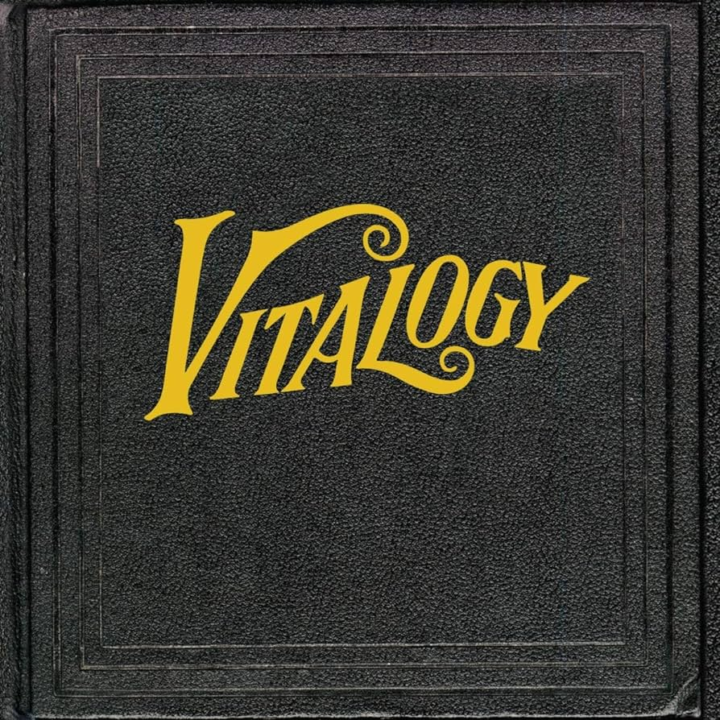

Vitalogy
Temes
- Last Exit
- Spin The Black Circle
- Not For You
- Tremor Christ
- Nothingman
- Whipping
- Pry, To
- Corduroy
- Bugs
- Satan's Bed
- Better Man
- Aye Davanita
- Immortality
- Hey Foxymophandlemama, That's Me
Descripció
Vitalogy és el tercer àlbum d'estudi de la banda nord-americana de grunge Pearl Jam, llançat el 22 de novembre de 1994 per la companyia discogràfica Epic Records. Pearl Jam va escriure i va gravar Vitalogy mentre realitzava la gira del seu àlbum Vs. (1993). La música d'aquest nou treball és més diversa en comparació dels anteriors i consisteix en cançons agressives de rock, balades i diverses peces experimentals .
El disseny de Vitalogy és una rèplica d'un llibre de medicina dels anys 1920. L'àlbum va ser llançat en primer lloc en format vinil, seguit d'un llançament en diversos formats el 6 de desembre de 1994. Vitalogy es va convertir en el segon àlbum més venut en la carrera de la banda des del seu llançament en disc compacte, sent només superat per Vs., i va aconseguir cinc discos de platí de la RIAA a Estats Units.
Pearl Jam va tornar a treballar amb el productor Brendan O'Brien per al seu tercer àlbum. La banda va escriure moltes de les cançons durant les proves de so del seu Vs. Tour i la majoria de les cançons de l'àlbum van ser gravades durant els dies de descans de la gira. La primera de les sessions va tenir lloc el 1993, a Nova Orleans (Luïsiana), on la banda va gravar "Tremor Christ" i "Nothingman". La resta del material el van escriure i van gravar el 1994, en diferents sessions a Atlanta (Geòrgia) i Seattle (Washington), i van finalitzar l'àlbum al Bad Animals Studio d'aquesta última ciutat, quan va acabar la gira. Pearl Jam va escriure "Immortality" a l'abril de 1994, quan la banda es trobava de gira a Atlanta. La majoria de l'àlbum es va completar al començament de 1994, però el seu llançament va ser endarrerit degut o bé a una demora forçada per Epic o al boicot de la banda contra Ticketmaster .